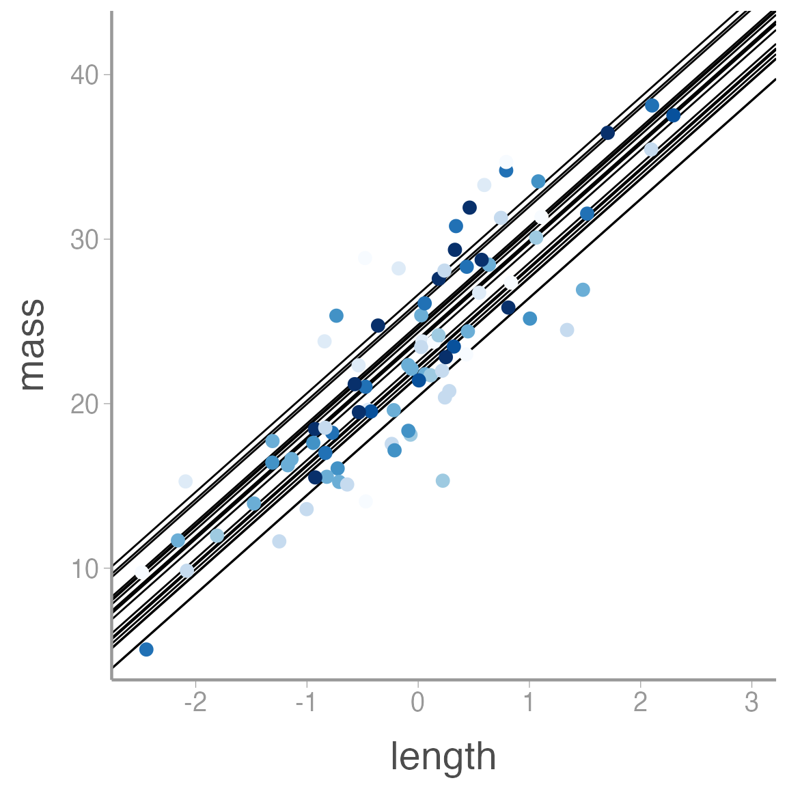
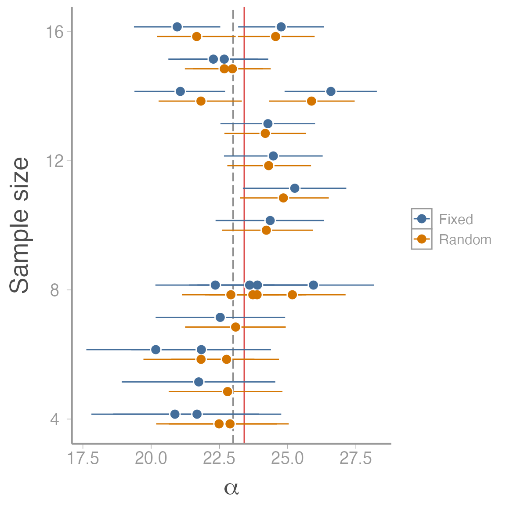
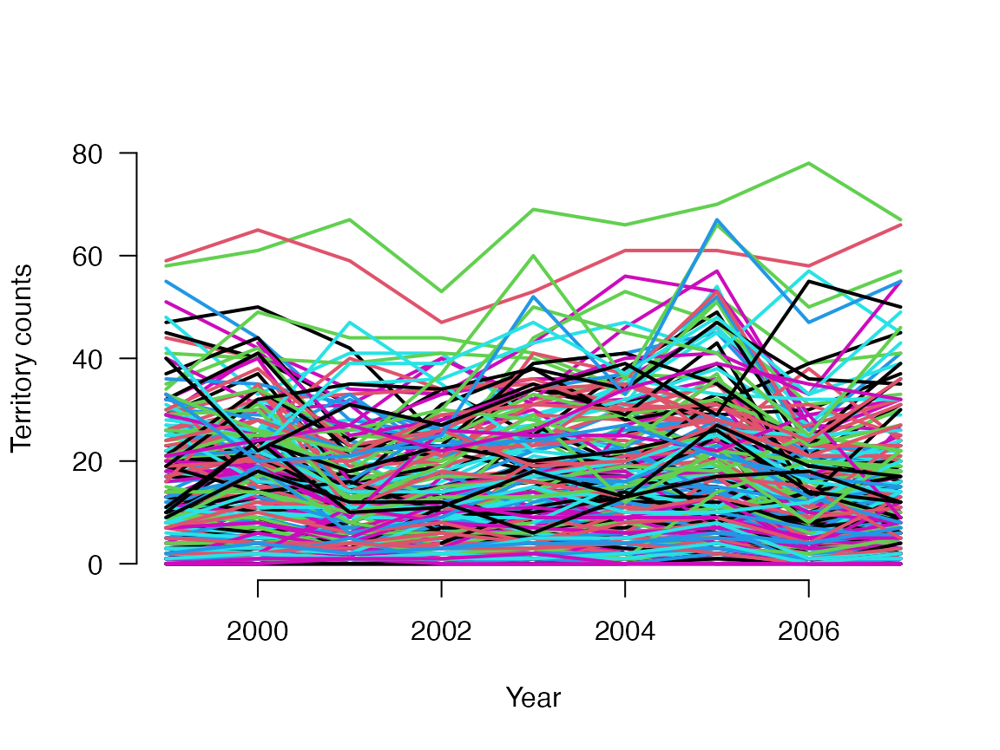

Introduction to random effects and hierarchical models
WILD6900
2019-02-26
random_effects.RmdIn this activity, we will use the process of simulating data to understand what random effects are and how they are interpreted in hierarchical models.
Objectives
Simulate data sets with both fixed and random effect structure
Fit fixed and random effects models in JAGS
For this lab, let’s assume we’re interested in modeling the the body mass (g) of lizards as a function of body length (mm). We capture lizards on \(J\) study plots and measure the mass and length of each individual.
The model
In this example, we have a single continuous predictor variable and \(J\) levels of a factor. We’ll assume for now that the residual body mass of each individual is normally distributed after accounting for body length. This suggests that following model:
\[y_{ij} = \alpha_{[j]} + \beta \times x_i + \epsilon_i\]
\[\alpha_{[j]} \sim normal(\mu_{alpha}, \tau_{alpha})\]
\[\epsilon_i \sim normal(0, \tau)\]
First, set up the simulation parameters:
J <- 20 # Number of sites
N <- 200 # Number of observations
Length <- rnorm(N) # Scaled body length
## Randomly determine each individuals study plot
plot <- sample(x = 1:J, size = N, replace = TRUE)
table(plot)| plot | Freq |
|---|---|
| 1 | 9 |
| 2 | 10 |
| 3 | 7 |
| 4 | 18 |
| 5 | 9 |
| 6 | 8 |
| 7 | 9 |
| 8 | 13 |
| 9 | 11 |
| 10 | 15 |
| 11 | 12 |
| 12 | 9 |
| 13 | 8 |
| 14 | 9 |
| 15 | 7 |
| 16 | 9 |
| 17 | 10 |
| 18 | 5 |
| 19 | 13 |
| 20 | 9 |
Now, let’s set the parameters in the model:
mu.alpha <- 23 # Overall mean body mass
sigma.alpha <- 2 # standard deviation of group-level means
tau.alpha <- 1/sigma.alpha^2
alpha <- rnorm(J, mu.alpha, sigma.alpha)
beta <- 6 # Slope of body length on mass
sigma <- 3 # Residual standard deviation
tau <- 1/sigma^2To create the linear predictor, we’ll use the model.matrix() function to create the model matrix corresponding to our model and then multiply it by our parameters:
Xmat <- model.matrix(~as.factor(plot) + Length - 1)
Xmat[1:5,c(1,2,3,21)]
#> as.factor(plot)1 as.factor(plot)2 as.factor(plot)3 Length
#> 1 0 0 0 1.3625
#> 2 0 0 0 0.8338
#> 3 0 0 0 -0.6749
#> 4 0 0 0 0.2460
#> 5 0 0 0 -0.9785Now use matrix multiplicaiton to create the linear predictor:
linear.pred <- Xmat %*% c(alpha, beta)
head(linear.pred)
#> [,1]
#> 1 34.00
#> 2 27.36
#> 3 20.72
#> 4 25.36
#> 5 14.26
#> 6 19.78And finally generate the observations and combine the relevant vectors within a single data frame:
mass <- rnorm(N, mean = linear.pred, sd = sigma)
mass_df <- data.frame(plot = as.factor(plot), length = Length, pred_length = linear.pred, mass = mass)
ggplot(mass_df, aes(x = length, y = mass, color = plot)) +
geom_abline(intercept = alpha, slope = beta) +
geom_point() +
scale_color_brewer() +
guides(color = "none")
Fitting the model
Now we’re ready to fit the model in JAGS. Code for this model can be accessed with:
model.file <- system.file("jags/random_ancova.jags", package = "WILD6900")Next, prepare the data, initial values, and MCMC settings. Notice the need to generate \(J\) starting values of \(\alpha\):
jags_data <- list(y = mass_df$mass, N = nrow(mass_df),
J = J,
plot = plot,
x = mass_df$length)
jags_inits <- function(){list(mu.alpha = rnorm(1),
sigma.alpha = runif(1),
alpha = rnorm(J), # Notice we need J initial values
beta = rnorm(1),
tau = runif(1))}
params <- c("mu.alpha", "sigma.alpha", "alpha", "beta", "tau", "sigma")
re_fit <- jagsUI::jags(data = jags_data, inits = jags_inits,
parameters.to.save = params,
model.file = model.file,
n.chains = 3, n.iter = 10000, n.burnin = 2500, n.thin = 1)
print(re_fit)| mean | sd | 2.5% | 25% | 50% | 75% | 97.5% | Rhat | n.eff | overlap0 | f | |
|---|---|---|---|---|---|---|---|---|---|---|---|
| mu.alpha | 22.495 | 0.5450 | 21.412 | 22.141 | 22.501 | 22.854 | 23.564 | 1.000 | 22500 | 0 | 1 |
| sigma.alpha | 2.125 | 0.4586 | 1.378 | 1.803 | 2.074 | 2.386 | 3.167 | 1.001 | 7023 | 0 | 1 |
| alpha[1] | 23.277 | 0.9789 | 21.350 | 22.613 | 23.273 | 23.929 | 25.200 | 1.000 | 22500 | 0 | 1 |
| alpha[2] | 20.719 | 0.9428 | 18.878 | 20.092 | 20.725 | 21.348 | 22.568 | 1.000 | 22500 | 0 | 1 |
| alpha[3] | 22.839 | 1.0634 | 20.743 | 22.118 | 22.848 | 23.554 | 24.914 | 1.000 | 22500 | 0 | 1 |
| alpha[4] | 21.573 | 0.7263 | 20.145 | 21.087 | 21.573 | 22.063 | 22.979 | 1.000 | 17445 | 0 | 1 |
| alpha[5] | 25.811 | 1.0224 | 23.792 | 25.128 | 25.807 | 26.491 | 27.841 | 1.000 | 22500 | 0 | 1 |
| alpha[6] | 24.673 | 1.0381 | 22.661 | 23.983 | 24.667 | 25.358 | 26.760 | 1.000 | 22500 | 0 | 1 |
| alpha[7] | 22.060 | 0.9842 | 20.118 | 21.398 | 22.066 | 22.713 | 23.962 | 1.000 | 14905 | 0 | 1 |
| alpha[8] | 24.868 | 0.8573 | 23.206 | 24.293 | 24.865 | 25.454 | 26.532 | 1.000 | 11115 | 0 | 1 |
Just for kicks, let’s fit the same data to a model that assumes fixed-effects on the \(\alpha\)’s:
model.file <- system.file("jags/fixed_ancova.jags", package = "WILD6900")
jags_inits <- function(){list(alpha = rnorm(J), # Notice we need J initial values
beta = rnorm(1),
tau = runif(1))}
params <- c("alpha", "beta", "tau", "sigma")
fe_fit <- jagsUI::jags(data = jags_data, inits = jags_inits,
parameters.to.save = params,
model.file = model.file,
n.chains = 3, n.iter = 10000, n.burnin = 2500, n.thin = 1)
print(fe_fit)| mean | sd | 2.5% | 25% | 50% | 75% | 97.5% | Rhat | n.eff | overlap0 | f | |
|---|---|---|---|---|---|---|---|---|---|---|---|
| alpha[1] | 23.22 | 1.1058 | 21.06 | 22.48 | 23.22 | 23.96 | 25.39 | 1.0000 | 22500 | 0 | 1 |
| alpha[2] | 20.03 | 1.0451 | 17.97 | 19.32 | 20.03 | 20.74 | 22.09 | 1.0001 | 11889 | 0 | 1 |
| alpha[3] | 22.59 | 1.2374 | 20.15 | 21.76 | 22.59 | 23.42 | 25.01 | 1.0000 | 22500 | 0 | 1 |
| alpha[4] | 21.31 | 0.7783 | 19.78 | 20.78 | 21.31 | 21.83 | 22.83 | 1.0000 | 22500 | 0 | 1 |
| alpha[5] | 26.48 | 1.0933 | 24.34 | 25.75 | 26.48 | 27.22 | 28.62 | 1.0000 | 22500 | 0 | 1 |
| alpha[6] | 25.07 | 1.1667 | 22.81 | 24.28 | 25.07 | 25.85 | 27.35 | 1.0001 | 14485 | 0 | 1 |
| alpha[7] | 21.66 | 1.1063 | 19.47 | 20.93 | 21.67 | 22.41 | 23.80 | 1.0003 | 11798 | 0 | 1 |
| alpha[8] | 25.14 | 0.9155 | 23.35 | 24.52 | 25.15 | 25.76 | 26.94 | 0.9999 | 22500 | 0 | 1 |
| alpha[9] | 22.44 | 0.9957 | 20.49 | 21.77 | 22.44 | 23.12 | 24.38 | 1.0001 | 22500 | 0 | 1 |
| alpha[10] | 20.33 | 0.8695 | 18.62 | 19.73 | 20.33 | 20.92 | 22.03 | 1.0000 | 22500 | 0 | 1 |
Finally, combine results from the two models to visualize differences in the \(\alpha\) estimates:
compare_mods <- data.frame(alpha_mean = c(re_fit$mean$alpha, fe_fit$mean$alpha),
CI_2.5 = c(re_fit$q2.5$alpha, fe_fit$q2.5$alpha),
CI_97.5 = c(re_fit$q97.5$alpha, fe_fit$q97.5$alpha),
n = c(table(plot) - 0.15, table(plot) + 0.15),
model = rep(c("Random", "Fixed"), each = J))
ggplot(compare_mods, aes(x = alpha_mean, color = model, y = n)) +
geom_vline(xintercept = mu.alpha, color = "grey50", linetype = "longdash") +
geom_vline(xintercept = re_fit$mean$mu.alpha, color = "#CD0200", alpha = 0.75) +
geom_errorbarh(aes(xmin = CI_2.5, xmax = CI_97.5), height = 0) +
geom_point(size = 4, color = "white") +
geom_point() +
scale_color_manual(values = c("#446E9B", "#D47500", "black")) +
scale_x_continuous(expression(alpha)) +
scale_y_continuous("Sample size")
Quantifying changes in Coal tit (Periparus ater) abundance
In the remainder of this lab, you will use data from the Swiss Breeding Bird Survey to model changes in the abundance of Swiss Coal tits from 1999-2007.

Photo by Andreas Eichler via WikiCommons
A data frame containing the counts and some additional information about each site (elevation and percent forest cover) and count (observer ID and whether it was an observers first time doing a BBS survey) is included in the WILD6900 package 1:
| site | spec | elevation | forest | y1999 | y2000 | y2001 | y2002 | y2003 | y2004 | y2005 | y2006 | y2007 | obs1999 | obs2000 | obs2001 | obs2002 | obs2003 | obs2004 | obs2005 | obs2006 | obs2007 | first1999 | first2000 | first2001 | first2002 | first2003 | first2004 | first2005 | first2006 | first2007 |
|---|---|---|---|---|---|---|---|---|---|---|---|---|---|---|---|---|---|---|---|---|---|---|---|---|---|---|---|---|---|---|
| 186 | Coaltit | 420 | 3 | 0 | 1 | 2 | 2 | 0 | 0 | 2 | 1 | 0 | 1576 | 1576 | 1576 | 1576 | 1576 | 1576 | 1576 | 1576 | 2125 | 1 | 0 | 0 | 0 | 0 | 0 | 0 | 0 | 1 |
| NA.29 | Coaltit | 450 | 21 | 0 | 0 | 0 | 0 | 3 | 2 | 0 | 1 | 0 | NA | NA | NA | NA | NA | NA | NA | NA | NA | NA | NA | NA | NA | NA | NA | NA | NA | NA |
| 2.1 | Coaltit | 1050 | 32 | NA | 7 | 15 | 19 | 12 | 11 | 12 | 11 | 7 | NA | 2064 | 2064 | 2064 | 3299 | 3299 | 3299 | 3299 | 3299 | NA | 1 | 0 | 0 | 1 | 0 | 0 | 0 | 0 |
| 189.1 | Coaltit | 920 | 9 | 11 | 9 | 5 | 9 | 8 | 7 | 9 | 6 | 2 | 1576 | 2031 | 2031 | 2031 | 2031 | 2031 | 2031 | 2031 | 169 | 1 | 1 | 0 | 0 | 0 | 0 | 0 | 0 | 1 |
| 191.1 | Coaltit | 1110 | 35 | 27 | 24 | 21 | 19 | 22 | 31 | 28 | 9 | 18 | 1976 | 1976 | 1976 | 1976 | 1976 | 1976 | 1976 | 1976 | 1976 | 1 | 0 | 0 | 0 | 0 | 0 | 0 | 0 | 0 |
| 5 | Coaltit | 510 | 2 | NA | 0 | 2 | 1 | 0 | 0 | 0 | 0 | 0 | NA | 2158 | 3288 | 3288 | 3304 | 3304 | 3304 | 3304 | 3304 | NA | 1 | 1 | 0 | 1 | 0 | 0 | 0 | 0 |
Preparing the data
Before running any models, we will first prepare the data. JAGS will take the counts and predictor variables as matrices with dimensions of nSites x nYears. Those matrices can easily be created from the data frame:
C <- as.matrix(tits[5:13])
obs <- as.matrix(tits[14:22])
first <- as.matrix(tits[23:31])
matplot(1999:2007, t(C), type = "l", lty = 1, lwd = 2, main = "", las = 1, ylab = "Territory counts", xlab = "Year", ylim = c(0, 80), frame = FALSE)
One issue with the obs and first matrices is that they contain NA values, which JAGS will not allow in predictor variables (they are ok in the response variable, as we will soon see). Some of the NA values correspond to years when a sites was not surveyed (in these cases, there will also be a NA in the C matrix). In addition, JAGS will want the observer ID as a continuous variable rather than a factor. We will first convert the obs levels into a numeric vector and the create a new matrix containing the correct numberic IDs:
a <- as.numeric(levels(factor(obs))) # All the levels, numeric
newobs <- obs # Gets ObsID from 1:271
for (j in 1:length(a)){newobs[which(obs==a[j])] <- j }Next, we need to fill in the NA values. For the observer ID, we’ll lump all missing values as a single value corresponding to the number of observers + 1. For the first matrix, we will code the NA values as 0, which corresponds to an ‘experienced’ observer. This will decrease our power to quantify the effect of being a novice observer but not to the extent that it will substaintially alter our conclusions.
The simplest count model
Let’s start by fitting the most simple model we can create for these data: the intercept-only model. In this model, we assume that the expected number of coal tits is constant, that is, it doesn’t vary across sites or years or observers.
On your own, write out the distribution, link function, and linear predictor for the intercept-only model. What parameters does this model include? What prior distribution(s) would be most appropriate for these parameters?
You can view the JAGS code for this model by running:
glm0_mod <- system.file("jags/GLM0.jags", package = "WILD6900")
file.show(glm0)Now prepare the data and MCMC settings to run this model:
# Bundle data
glm0_data <- list(C = t(C), nsite = nrow(C), nyear = ncol(C))
# Initial values
glm0_inits <- function() list(alpha = runif(1, -10, 10))
# Parameters monitored
params <- c("alpha")
# MCMC settings
ni <- 1200
nt <- 2
nb <- 200
nc <- 3
# Call JAGS from R
glm0 <- jagsUI::jags(data = glm0_data, inits = glm0_inits,
parameters.to.save = params,
model.file = glm0_mod, n.chains = nc,
n.thin = nt, n.iter = ni, n.burnin = nb)
# Summarize posteriors
print(glm0, digits = 3)
# Check trace plots
jagsUI::traceplot(glm0)Fixed site effects
The intercept-only model is obviously not a very good model of these counts but serves as a useful starting point for developing more complex models. As a start for building a better model, let’s add site as a fixed effect. In other words:
\[y_{ij} \sim Poisson(\lambda_j)\] \[log(\lambda_j) = \alpha_j\]
Modify the JAGS model from the previous example to run this fixed-site model. As a starting point:
sink("jags/GLM0.jags")
cat("
model {
# Prior
alpha ~ dnorm(0, 0.01) # log(mean count)
# Likelihood
for (i in 1:nyear){
for (j in 1:nsite){
C[i,j] ~ dpois(lambda[i,j])
lambda[i,j] <- exp(log.lambda[i,j])
log.lambda[i,j] <- alpha
} #j
} #i
}
",fill = TRUE)
sink()
Be sure to change the name of the model file before running that code. Now modify the data and inits object as necessary to run the model in JAGS. Also note that in the jagsUI::jags() call you will need to reference the model file you just created rather than the model file from the previous example.
Additional complexity
Even with this relatively simple data set, you can create relatively complex models. On your own, try to fit the following models using the JAGS code from above as a starting point:
Fixed year and site effects
Random site effects
Random year effects
Random site and random year effects
Random site and random year effects and fixed first-year observer effect
Random site and random year effects, linear year effect and fixed first-year observer effect
If you need help, refer to chapter 4 of Kery & Schaub. You can also access the following model files from the WILD6900 package: GLM1.jags, GLM2.jags, GLMM1.jags, GLMM2.jags, GLMM3.jags, GLMM4.jags, GLMM%.jags. These model files are for your own reference but it is up to you to translate the code into the model descriptions above.
One note about including multiple factors in the model. In the models with both site and year (as a factor), the model cannot estimate the predicted count for all combinations of both factors. Essentially, the model needs to set one level of one of the factors to a “reference” level to avoid over-parameterization. In JAGS, we have to do this manually by setting the prior for one level to zero:
eps[1] <- 0You will see this in several of the above models and may need to include it in your own models as you write the code.
Data and code from Kéry & Schaub 2015. Bayesian Population Analysis using WinBugs↩